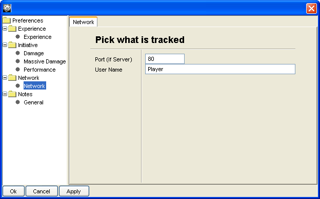

The Experience Preference enables you to choose from which rules set you wish to use to award experience.

The Damage Preferences in the Initiative section enables you to choose from which rules set to use for several sub-behaviors involving damage.

The Massive Damage Preferences in the Initiative section enables you to choose from which rules set you wish to use in regards as to how GMGen handles massive damage.

With the Refresh onstate change checkbox checked the information in the tabs to the right will be updated automatically. Unchecked you will need to update manually by clicking the refreash tabs button.

The Network Preferences let you set the server port and the user name.

The General Notes Preferences allows you to set the directory where notes are stored to any you choose. There is also an option to log game data.